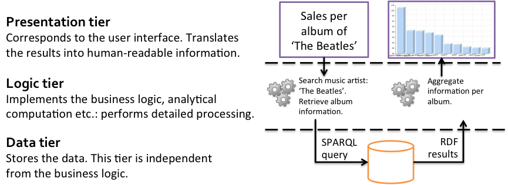
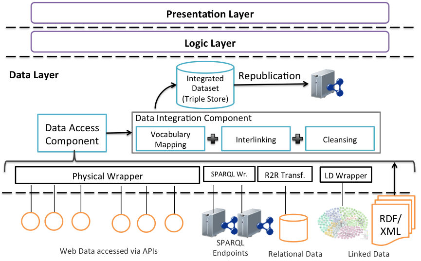

An important architectural pattern used in system development is the multitier architecture. A multitier architecture separates functionality into a number of layers from low-level data storage through to user interaction components. This architecture is commonly used for many kinds of web application. As many Linked Data applications are also web applications, they tend to conform to this architectural approach.
An important advantage of the tiered architecture is that it logically separates the functionality of the system into a series of layers and specifies the communication between those layers. This separation makes it far easier to replace a layer of the architecture or reuse a layer of an existing architecture in a new application. For example, an application may have a layer or tier dedicated to data storage. This functionality may be provided by a particular database or triplestore. The storage layer could be reused in an alternative application or replaced by another storage layer providing the same functionality and communication with other layers.
The most commonly used multitier architecture is the three-tier architecture. First, a presentation tier provides a user interface that can accept user input and render results in a human-readable form. Second, a logic tier implements the business logic of the application. This takes the available data and analyses and transforms it to meet the needs of the user. Third, a data tier stores the underlying data in a form independent from the business logic applied to it in the application. Figure 13 illustrates our music example as a three-tier architecture. The presentation tier handles user queries and the returned outputs including textual results and visualisations. The logic tier transforms user queries into SPARQL queries and aggregates the RDF results. The data tier is responsible for storage and in this case uses a triplestore. One important aspect to note in the case of Linked Data applications is that the dividing line between the data tier and the logic tier may not be so clear-cut. If a relational database is used as a storage layer, then all processing of the data beyond the returning of results to a database query is done in the logic layer. However, triplestores are capable of performing various types of reasoning and therefore in some cases a significant part of the business logic can be carried within the triplestore. For reasons of performance it is advantageous to perform reasoning on a lower level as possible.

Figure 13: Music example of the three-tier architecture.
Figure 14 shows the architecture of our music application with a particular emphasis on the components within the data tier. The presentation layer produces the kinds of visualisations we saw in Chapter 4. The logic layer processes data for presentation. The data tier as well as implementing some of the logic does much more work than just data storage. Data stored within the data tier may be consumed from a number of sources. These may be consumed from SPARQL endpoints or RDF dumps. Wrappers may be required to covert the data into an appropriate format. As described in chapter 3 R2RML may be used to transform data from a relational database into RDF.
Also, as covered in Chapter 3, the retrieved data may use different vocabularies on the schema level and may also on the instance level have different individuals referring to the same thing. As described in Chapter 3, languages such as SKOS can be used to express relationships across vocabularies and the owl:sameAs property can be used to relate resources. Chapter 3 also describes how tools such as the SILK framework, could be used to identify and express relationships across datasets.
Some data cleansing may also be required, for example, to identify ambiguities between names of the resources within the datasets and to fix these ambiguities. Therefore, vocabulary mapping, interlinking and cleansing need to be carried out to produce a consistent dataset. As well as being used by the logic layer, a direct facility to republish the data may be provided.

Figure 14: General architecture of Linked Data applications.